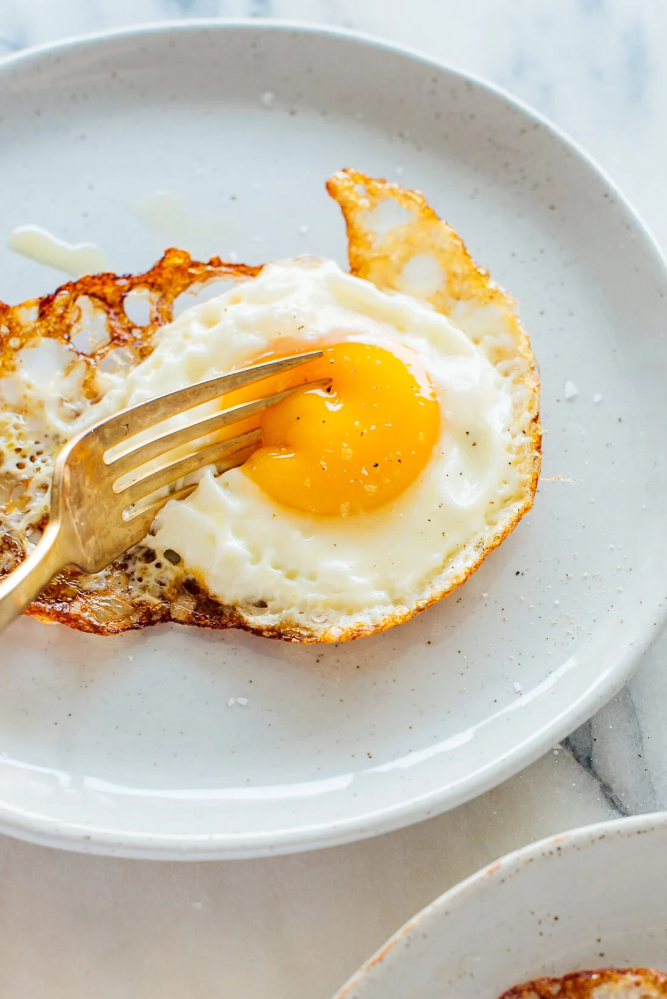

<h1>Fried Egg</h1>

<h2>Description</h2>
<p>This is my classic go-to fried egg</p>
<h2>Ingredients</h2>
<ul>
    <li>Egg</li>
    <li>Olive Oil</li>
</ul>
<h2>Steps</h2>
<ol>
    <li>Olive ol, in the pan</li>
    <li>Crack egg into Pan</li>
    <li>Flip Egg when crispy</li>
</ol>